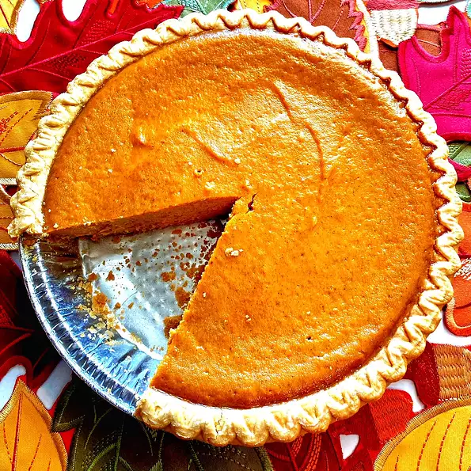

Pie

About The Pie:
Nutrition Facts Per Serving:
309 calories; protein 7.5g; carbohydrates 41.8g; fat 13.2g; cholesterol 63.2mg; sodium 333.6mg.
- Time to make:1 hr
- Servings:8
- Yield:1 9inch pie
Ingredients:
- 2 eggs
- 1 (16 ounce) can pumpkin puree
- 1 (14 ounce) can sweetened condensed milk
- 1 teaspoon pumpkin pie spice
- 1 (9 inch) unbaked pie crust
Steps:
- Preheat the oven to 425 degrees F (220 degrees C).
-
Combine eggs, pumpkin puree, sweetened condensed milk,
and pumpkin pie spice in a large bowl and mix until combined.
-
Fit pie crust into a 9-inch pie dish; pour pumpkin mixture into the crust.
-
Place pie on a baking sheet and bake in the preheated oven for 15 minutes.
Reduce heat to 350 degrees F (175 degrees C) and bake until filling is set, 35 to 40 minutes.